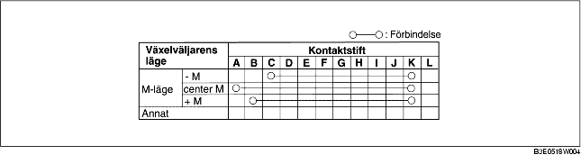

1. Demontera batterikåpan. (Se DEMONTERING/MONTERING AV BATTERI [ZJ, Z6].) (Se DEMONTERING/MONTERING AV BATTERIET [LF].)
2. Lossa batteriets minuskabel.
3. Demontera konsolen. (Se DEMONTERING/MONTERING AV KONSOL.)
4. Koppla ur anslutningen till växelväljarens komponenter.
5. Kontrollera att förbindelsen är så som visas i tabellen.
